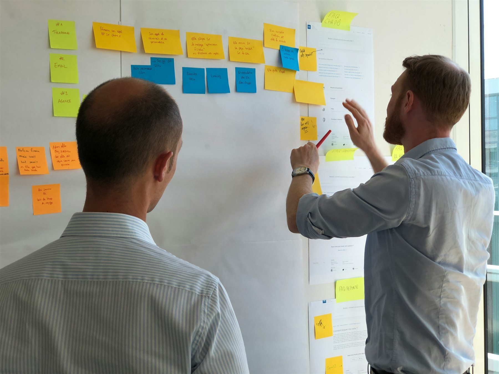

Geschäftsführung
Für Ziel, Priorität und Budgetrahmen.
Verpflichtender Einstieg in jede Umsetzung
Im Klartag nehmen wir ausgewählte Arbeitsabläufe auf, bewerten mögliche Anwendungsfälle, prüfen Daten und Schnittstellen und entscheiden zwischen eigener KI-Architektur und Microsoft 365. Danach erhalten Sie eine priorisierte Roadmap und ein kompaktes schriftliches Ergebnis.
3.900 Euro netto, Festpreis, bei Folgeprojekt vollständig anrechenbar
Vor dem Klartag steht ein etwa 30-minütiges Gespräch mit der Geschäftsführung.

Warum verpflichtend?
Keine Plattformentscheidung allein auf Basis eines Telefonats.
Abläufe wachsen über Jahre. Sie werden angepasst, abgekürzt und zwischen Menschen weitergegeben. Wer nur ein Organigramm oder eine Prozessbeschreibung kennt, kann noch nicht beurteilen, wo KI trägt.
Der Klartag schützt beide Seiten vor einer ungeeigneten Plattform, nicht anbindbaren Systemen und Anwendungen ohne ausreichenden wirtschaftlichen Hebel. Er ist eine Entscheidungsgrundlage, kein Awareness-Workshop und keine Schulung.
Teilnehmer
Die genaue Runde legen wir in der Vorbereitung fest.
Für Ziel, Priorität und Budgetrahmen.
Für Systeme, Datenzugänge und Betriebsverantwortung.
Für tatsächliche Abläufe, Ausnahmen und fachliche Grenzen.
Für Einführung, Projekt, Architektur und Technik.
So läuft der Klartag
Vereinbarte Unterlagen sichten sowie Systeme, Rollen und Problemfelder erfassen.
Fachanwender zeigen ausgewählte Tätigkeiten so, wie sie tatsächlich ausgeführt werden.
Nutzen, Messgröße, Daten, Risiken und menschliche Freigaben festhalten.
Daten und Schnittstellen einschätzen, Zielarchitektur begründen und nächste Schritte priorisieren.
Am Ende des Tages steht die Richtung. Das kompakte schriftliche Ergebnis folgt im Anschluss.
Ihr Ergebnis
Keine Folien zum Wegheften. Eine Grundlage, mit der Sie entscheiden können, auch gegen uns.
Mit Nutzenhypothese und einer Messgröße für die spätere Prüfung.
Was sich voraussichtlich anbinden lässt, wo Grenzen liegen und was vertieft geprüft werden muss.
Eigene KI-Ebene oder Microsoft 365.
Rollen, Governance, Reihenfolge und nächste Entscheidungen.
Enthalten
Vorbereitung und Sichtung vereinbarter Unterlagen, der gemeinsame Tag in Ihrem Unternehmen sowie das kompakte schriftliche Ergebnis im Anschluss.
Reise
Reise- und Übernachtungskosten stimmen wir vorab mit Ihnen ab.
Anrechnung
Wenn anschließend ein Einführungs- oder Softwareprojekt mit manibase entsteht, rechnen wir die 3.900 Euro vollständig auf das Folgeprojekt an.
Danach
Typischer nächster Schritt ist die Einführung der Bausteine, die der Klartag empfohlen hat: ein kontrollierter KI-Arbeitsplatz, einzelne Automatisierungen, vorbereitete KI-Helfer oder eine Kombination daraus. Jeder Baustein geht produktiv, sobald er bereit ist. Individuelle Software ist möglich, wenn Standardplattformen den Arbeitsablauf nicht ausreichend abbilden. Auch eine Entscheidung gegen ein Projekt ist ein zulässiges Ergebnis.
Etwa 30 Minuten mit der Geschäftsführung. Ihre IT oder Ihr IT-Dienstleister ist willkommen. Wenn ein Klartag derzeit nicht sinnvoll ist, sagen wir das.